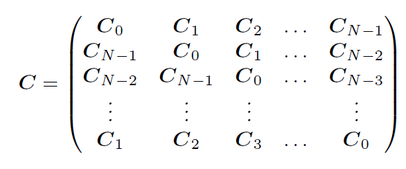

Appilcations of state space models
Contents
Appilcations of state space models¶
ARMA(p,q) models¶
Example
MA(1)
State space form
Example ARMA(2,1)
State space form
Generalizes to ARMA(p,q)
Unobserved-components models¶
Example
State space form
State space form for the level of \(z_t\)
Time-varying parameters¶
Dynamic Factor models¶
Example
State Space form
can be extended to multiple factors evolving as VAR(q)
and more general AR processes for the idiosyncratic components
DFM are a parsimoneous alternative to VARs with many series
Dynamic factor models in Statsmodels
related common trend model
State Space form
\(z_{1,t}\) and \(z_{2,t}\) share a common stochastic trend - cointegrated
the stationary terms can have more complicated dynamics, and may be correlated (e.g VAR instead of AR processes)
The Hodrick-Prescott filter¶
Unobserved components model
State space form
no parameters are estimated
the parameters can be estimated and the restrictions tested
Why You Should Never Use the Hodrick-Prescott Filter
import statsmodels.tsa.api as tsa
from pathlib import Path
import pandas as pd
import matplotlib.pyplot as plt
from fredapi import Fred
fred = Fred(api_key=your_api_key)
start = '1948-01'
end = '2022-01'
df_raw = fred.get_series('GNPC96', observation_start=start, observation_end=end)
df_raw.index.freq = 'QS'
df_raw.name = 'gdpc1'
df_raw = df_raw.to_frame()
df_raw.head()
| gdpc1 | |
|---|---|
| 1948-01-01 | 2102.422 |
| 1948-04-01 | 2137.588 |
| 1948-07-01 | 2149.832 |
| 1948-10-01 | 2152.212 |
| 1949-01-01 | 2122.155 |
hp_cycle, hp_trend = tsa.filters.hpfilter(df_raw[['gdpc1']], lamb=1600)
mod = tsa.UnobservedComponents(df_raw[['gdpc1']], 'lltrend')
res = mod.smooth([1., 0, 1. / 1600]) # 'sigma2.irregular', 'sigma2.level', 'sigma2.trend'
#print(res.summary())
ucm_trend = pd.Series(res.level.smoothed, index=df_raw[['gdpc1']].index)
fig, ax = plt.subplots(figsize=(16, 8))
ax.plot(df_raw[['gdpc1']], label='real GDP', color='blue', linestyle='solid', linewidth=1)
ax.plot(hp_trend, label='HP trend', color='green', marker='o', linestyle='dashed', linewidth=1, markersize=.5)
ax.plot(ucm_trend, label='UC Model trend', color='red', marker='+', linestyle='dashed', linewidth=1, markersize=.5)
ax.legend();
Frequency-domain filters¶
time series can be thought of as the sum of periodic functions (fluctuations)
frequency domain, spectral analysis of time series
business cycle components of time series correspond a subset of those fluctuations
those with period greater than 1.5 (or 2) years and less than 8 years
faster (shorter period) or slower (longer period) fluctuations are interpreted as being outside the business cycle
low, business cycle, high frequencies
frequency-domain filters aim to extract the business cycle components
Baxter-King, Christiano-Fitzgerald
periodic functions?
\(\cos(x) = \cos(x + 2 k \pi), \;\;\; k = 1, 2, \cdots\)
\(\sin(x) = \sin(x + 2 k \pi), \;\;\; k = 1, 2, \cdots\)
as function of time: \(\cos(t \omega), \;\;\;t = t_1, \; t_2, \cdots \)
periodicity means that
\(\omega\) is the frequency, \(t_h - t_1\) is the period
a time series \(z_t\) can be represented as a sum (integral) of
business cycle component contains only those components with period between 1.5 and 8 years
with quarterly data: \(\frac{2 \pi}{32} \leq \omega\leq \frac{2 \pi}{6}\)
with monthly data: \(\frac{2 \pi}{96} \leq \omega\leq \frac{2 \pi}{18}\)
band-pass filter: keep only a subset (band) of \(\omega\)’s in \((0, \pi)\)
both Baxter-King and Christiano-Fitzgerald filters are computed as weighted moving averages of the series, the difference is in what the weights are
symmetric (BK) vs asymmetric (CF) weights
truncated on both ends (BK) vs using the full sample (CF)
bk_cycle = tsa.filters.bkfilter(df_raw[['gdpc1']])
cf_cycle, _ = tsa.filters.cffilter(df_raw[['gdpc1']])
cf_cycle.name = 'CF cycle'
bk_cycle.columns = ['BK cycle']
hp_cycle.name = 'HP cycle'
fig = plt.figure(figsize=(14, 10))
ax = fig.add_subplot(111)
cf_cycle.plot(ax=ax, style=["r--", ], legend=True)
bk_cycle.plot(ax=ax, style=["b-", ], legend=True)
hp_cycle.plot(ax=ax, style=["g-.", ], legend=True)
<AxesSubplot:>
Frequency domain log-likelihood¶
Whittle log-likelihood
\(f_{\mathbf{z}}(\omega, \boldsymbol \theta)\) is the model-implied spectral density of \(\mathbf{z} \) at \(\omega\)
\(I(\omega, \mathbf{z})\) is the periodogram of \(\mathbf{z}\) at \(\omega\)
it is like a Gaussian log-likelihood for independent observations
can be derived by approximating the covariance matrix of \(\mathbf{z}\) by a block circulant matrix, which can be diagonalized using DFT
\[ \mathbf{z}^{\prime} \mathbf{\Sigma}^{-1}(\mathbf{\theta}) \mathbf{z} \approx \operatorname{tr}\left( \mathbf{z}^{\prime} \mathbf{C}^{-1}(\mathbf{\theta}) \mathbf{z} \right) = \operatorname{tr}\left( \mathbf{z}^{\prime} V^{\prime}\mathbf{F}^{-1}(\mathbf{\theta}) V \mathbf{z} \right) = \sum_{\omega}\operatorname{tr}\left(f(\omega, \boldsymbol \theta)^{-1} I(\omega, \mathbf{z}) \right) \]
Block circulant matrix

The Whittle log-likelihood can be used as
an alternative to the Kalman filter
a way to estimate a model using only a subset of frequencies, e.g. BC frequencies
QUANTIFYING CONFIDENCE (2018) by Angeletos, Collard, Dellas